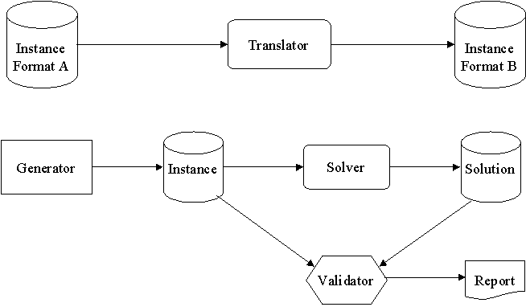
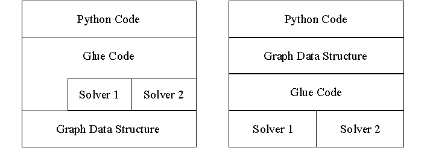

Experiences with Extension Programming
and Scripting in Python
Charles Anderson
IEOR Department, UC Berkeley
Abstract
Our experiences interfacing Python with optimization software are presented. The same work was done using extension programming and scripting. For our application and the software we are interfacing to, scripting was found to be the better solution.
Introduction
We are developing a toolbox or workbench for researchers in the field of Operations Research. We are using Python to create an easy-to-use environment in which users can experiment with a variety of optimization tools from different sources. The ultimate goal is to allow researchers to spend more time solving optimization problems and less time battling with the software.
Background
Our main work is in the field of combinatorial optimization. Our particular area of research is known as Network Flows [AMO93]. The basic problems to be solved are fairly easy to explain, especially to people with even the most basic knowledge of graph theory. For example, a maximum flow problem involves a network or graph of nodes connected with arcs. Each arc has a maximum capacity. The objective is to push as much flow from a source node through the network to a sink node without exceeding the capacity constraints and without leaving any surpluses or deficits at any nodes. A physical example would be moving fluid or gas from one location to another through a network of pipelines. Sometimes we may work with sub-problems of network flows, and other times we may use more general techniques such as linear programming.
For network flow research, we have the following entities:
The figure below shows the relationships between these entities.

Figure 1: Entities in the Toolbox
We may wish to solve real instances of problems such as the pipeline example above. Other times we wish to try multiple algorithms to compare solutions or performance. The algorithms would be run on the same instance, but the instance may be in different formats for the different solvers. Regardless, a problem instance is typically read from a file into memory, the solver computes a result and the solution is written to another file.
Problems Facing Researchers
There are many commercial and public domain software packages to solve such problems. New algorithms are published and often implemented by researchers. The first problem is that often the implementations are not particularly high quality, especially compared to commercial software packages. Another problem is that although there are some standard formats for problem instances, many tools have their own input and output formats, as well as strange and sometimes non-obvious usage. The problems can be compounded by ‘real world’ applications where the initial data is not in a standard format used by any of the tools. Basically, we lack a uniform, high quality set of software tools.
This Tower of Babel problem is exacerbated by steep learning curves for some tools. Often users are required to write C code to use the tools, and few researchers are particularly proficient in C. All of these obstacles discourage users, force them into using only one tool because it’s all they know, or cause them to walk away from a given problem out of a feeling of frustration.
We want a simple environment that can be used by researchers that does not require programming in C. It should be possible to add new tools to the toolbox with little or no C programming. We need to support new file formats easily. Ideally, we would also like to make this available with multiple user interfaces: script files, command line, WWW, window systems such as X-Windows.
Obviously, Python is a good choice. The syntax is easy to learn. There are a large number of existing libraries. It can be easily extended to add new functionality written in C or Python. The interpreted nature makes for very rapid development, and programmers are freed from low-level, error-prone details such as memory management.
Solutions
Given that these solver codes must be written in C (or Fortran) for performance, our first impulse was to use extension programming where we added a Python interface to existing C code via some C-language glue. We tried this, and although it worked, we encountered some problems that made this a less than ideal solution.
Our second implementation was based on simpler ideas of creating Python wrappers around existing applications and files. At the core, these are like more traditional scripts like shell scripts; they execute programs to read and write files. However, we encapsulate these details to create a friendlier, object-oriented environment.
Our contribution is an experiment in which we integrated tools using both extension and script programming. Due to the nature of the software we were working with, we found scripting to be more effective than extension programming.
Related Work
We first became aware of the concept of extension programming in the context of Tcl [Oust94]. There are many examples of extension programming projects. Dubois has been providing extensions to existing physics codes with a custom language [Dub94] as well as with Python [YDM96]. Commercial products such as Matlab also provide a high-level script language to high performance implementations of matrix manipulation code. Matlab can be extended by writing scripts or linking in C or Fortran code.
Shell scripts [Prat85] are an old idea to coordinate the execution of programs and link their input and output streams together. The beauty of command pipelines is often held up as an example of software reuse technology that actually works [Cox86]. Our work creates higher level abstractions on top of programs and files.
The Expect extension [Lib90] to Tcl provides a useful facility to control interactive programs from extended Tcl scripts. The tools we use are not usually interactive, but in some cases we may need to use such a tool, in which case we can use the Python version of Expect to interface with the tool.
TkMan [Phel95] is an example of using an external C program to perform compute-intensive tasks instead of using extension programming. This is very much like what we do, but we wish to create a framework in which we can plug in many such programs rather than just one or two that perform specific tasks.
Another way to view this work is in terms of wrapping ‘legacy applications’ for use in new systems. Our applications are not necessarily old, but they do share some common traits: existing code that cannot be re-written to conform to a new environment, the desire to maintain an arms-length relationship with the code, and possibly even code that must run on dedicated hardware.
Extension Programming
The initial project planned to put a Python front-end onto libraries of existing code. This would allow researchers to create or convert problem instances using the higher level tools available to the Python programmer and then invoke a solver written in C. The solution could then be analyzed or saved from the Python environment. A casual user would never have to write C code, and someone wishing to extend the toolkit would have to write a minimum of glue-code in C, but this code would only have to be written once.
We wanted to move the I/O functions from C code to Python where it can be much easier to read and write various strange file formats. Given M solvers and N file formats, we wanted to change the problem of supporting all file formats for all solvers from MN software tasks to M+N tasks.
It seemed the key was to develop a common representation of problems (i.e. networks) to be shared between the Python code and the solvers. We considered the idea of some kind of least common denominator representation for graphs that would be shared by all solvers. This was quickly discarded because no one data structure can be all things to all solvers, this would only work in cases where we had the source code for the solver, and it would involve significant modification to the algorithms.
Our second idea was to use the common representation at a layer above the solver codes. The Python code would manipulate the common representation, the glue logic would translate from the common representation to the ‘native’ representation used by the solver, and the solver would continue to use its original/native representation. Similarly, results (output) would be translated from the native representation to the common representation where they would be available to the Python code.
These two philosophies are shown below:

Figure 2: Where to locate the common data structure
This common data structure was designed to be simple. The objective was to make it easy to translate between the common structure and the various native formats. It was never a requirement that this representation be particularly efficient for implementing algorithms. Therefore, we did not consider using more sophisticated data structures such as the kjBuckets package from Arron Waters [PyContrib], but rather we created a simple representation with an array of nodes and an array of arcs. The simple interface is shown below:
|
CgGraph() |
Create a new, empty graph |
|
getSource/setSource |
Get or set the source node in the graph |
|
getSink/setSink |
Get or set the sink node in the graph |
|
addArc/getArc/numArcs |
Add an arc, get an arc, or get the number of arcs in the graph |
|
getNode/setNode/numNodes |
Add a node, get a node, or get the number of nodes in the graph |
Notice that the interface lacks methods to get all the arcs into or out of a node or to get all of the neighbors of a node. Those are the types of operations that a graph data structure used for a solver would need, but since this structure is not used directly by the solvers, we do not have such operations.
We implemented the common graph representation and adapted an existing maximum flow solver (called GOLD [Bad91]) to work as a Python extension module. Basically, the work involved replacing the file I/O routines in the standalone version of GOLD with fairly simple glue code to translate the common graph representation. With this extended Python interpreter, we were able to define graphs from Python by adding nodes and arcs, and compute the maximum flow for a network.
Although this worked for simple test cases, we found some problems during testing and made some observations based on the implementation.
Basically, although this scheme worked for a single solver (once the memory bugs were fixed), it seemed that we would continue to have problems as we added new solvers.
Wrapping and Scripting
We then began to look at using Python more as a shell-scripting language. We would leave the solvers as standalone programs and allow them to read and write their own native file formats on disk. Then we could use Python to develop file conversion filters and as a tool for coordinating the activities.
We created a framework of base classes in Python to represent solvers, instances, solutions, etc. These classes interact to solve user problems. In addition to base classes, there are sub-classes for particular solver or file types. There are common operations and attributes for base classes as well as specific operations and attributes for the sub-classes. For example, solvers all have a
solve method that works on an instance and creates a solution. A sub-class might have an attribute to control the verbosity of the output generated in the solution, whereas others might not. Similarly, the output of a solver, a solution instance, may contain data specific to the algorithm that generated it in addition to the information that would be common to all solutions.The Python classes we developed for the sub-classes are user-friendly ‘handles’ to the real instances that are typically represented in the file system. They provide a uniform look-and-feel for the disparate tools and objects. We have a common graph representation written in Python to facilitate translations. To convert from one file format to another, the user can write Python code to read the input format and build the graph in memory. Then the internal representation can be written out via more Python code into a file in another format. Therefore, we only need to write M+N translators rather than MN translators.
At the moment, the classes are completely implemented in Python without any use of extensions. To add a new solver to the toolbox, a user writes Python code to sub-class an existing solver class and adds the particular methods and attributes for the new solver. If we found a solver that was reliable (and free of memory bugs), and if there were some strong reason to include it into an extended Python interpreter, there is nothing in this architecture that precludes that. Like any extension, it would be pretty seamless when viewed from the Python code.
Obviously, external solvers imply the need to create a new process to run the solver. Since most of our problems are fairly large and require tens of seconds, tens of minutes, or more to solve, the overhead of a new process is minimal.
Below is an example script to solve an instance stored on disk:
import ProbInstance
import Solver
problem = ProbInstance.getInstance(‘mesh-4-4.max’)
dinics = Solver.Dinics()
dinics.setVerbose(1)
solution = dinics.solve(problem)
print ‘max flow value is’, solution.flowValue
The corresponding shell commands might look like:
prf_df 2 < mesh-4-4.max > mesh-4.4.flow
grep value mesh-4-4.flow
Note, the usage of this particular solver really is this primitive: it takes a single numeric value to control verbosity, and it only reads standard input and writes standard output.
Conclusions
We have used Python to create a toolbox to bring together many existing optimization solver programs. We first tried extension programming but met with limited success. We encountered a number of problems mostly related to the type of software we were attempting to interface with.
Fundamentally, there is nothing wrong with extension programming, but it appeared that it would not scale for our application. The problems are mostly related to the eclectic collection of software we are trying to use:
Therefore, we fell back to more traditional shell-script-like programming wherein the solvers are standalone programs that are invoked to read and write problem and solution data on disk. We created Python object wrappers around these tools to provide an easy to use interface.
Future Work
Our current prototype uses a tty-based interface built from components in [Lutz96]. We plan to develop a GUI, probably using TkInter to allow browsing objects and tools. Using the toolbox from the Web will require writing translators read and write HTML – i.e. new sub-classes of Instance and Solution.
Since the Python wrappers provide an arms-length connection to the objects and tools, we plan to investigate accessing tools and objects remotely over a network. We are considering ILU [JS96] to control remote tools and instances via a Python/ILU server running on the remote machine and an ILU client process on the local machine. This will allow a researcher to use the workbench on a personal workstation to control solvers running on ‘big iron’ machines or an entire network of workstations (NOW) supercomputer cluster.
Since some researchers start with problem instances in Excel or wish to post-process solutions with Excel, we would like to use the OLE/COM [Brock95] support in PythonWin to build a bridge between Excel and the solver workbench.
In a way, we can regard files on disk (instances, solutions, or solver executables) as persistent versions of the Python objects. Theoretically, we could regard the system as an object oriented DBMS (OODBMS) and use the system via
pickle by overriding the __getstate__ and __setstate__ methods. Browsing through the collection of solvers and instances would then involve navigating through the OODBMS. We are considering the possibilities of this OODBMS-oriented view of the system, but at the moment they mostly seem to have ‘gee-whiz’ value rather than being particularly practical for our research.Acknowledgements
Thanks to Eli Olinick whose travails were the initial seeds of this project. Thanks to Mark Lutz for his Python examples that hammered home the concepts of a framework. And of course, thanks to Guido for Python, without which this would probably have been a Tcl project.
References
|
AMO |
Ahuja, Ravidra, Magnati, Thomas, and Orlin, James. Network Flows: Theory, Algorithms, and Applications. Prentice-Hall, 1993. |
|
Bad91 |
Badics, Tamas. An implementation of Goldberg’s push-relabel algorithm. Source code available at: ftp://dimacs.rutgers.edu/pub/netflow/maxflow/solver-5 |
|
Beaz96 |
Beazley, David, Using SWIG to Control, Prototype, and Debug C Programs with Python. In Proceedings of the Fourth International Python Conference. 1996. |
|
Brock95 |
Brockschmidt, Kraig. Inside OLE: Second Edition. Microsoft Press, 1995. |
|
Cox86 |
Cox, Brad. Objected Oriented Programming: an Evolutionary Approach. Addison-Wesley, 1986. |
|
Dub94 |
Dubois, Paul. Making Applications Programmable. Computers in Physics, 11 (1) 1994, pp. 70. |
|
JS96 |
Janssen, Bill and Spreitzer, Mike.. ILU 2.0aplha8 Reference Manual. XEROX Palo Alto Research Center, March 1996 |
|
Lib90 |
Libes, Don, "expect: Curing Those Uncontrollable Fits of Interaction". In Proceedings of the Summer Usenix Conference, pp. 183-192. |
|
Lutz |
Lutz, Mark. Programming Python. O’Reilly and Associates, 1996. |
|
Oust94 |
Ousterhout, John. Tcl and the Tk Toolkit. Addison-Wesley, 1994. |
|
Phel95 |
Phelps, Thomas. "Two Years with TkMan: Lessions and Innovation, Or Everythin I Needed to Know about Tcl/Tk I Learned from TkMan", 1995 Tcl/Tk Workshop, Usenix Association. |
|
Prat85 |
Prata, Stephen. Advanced Unix – A Programmer’s Guide. Howard W. Sams & Co., Inc, 1985. |
|
PyContrib |
Contributed Python software available from http://www.python.org. |
|
YDM96 |
Yang, Tser-Yuan, Dubois, Paul, and Motteler, Zane. Building a Programmable Interface for Phusics Codes Using Numeric Python. In Proceedings of the Fourth International Python Conference. 1996 |